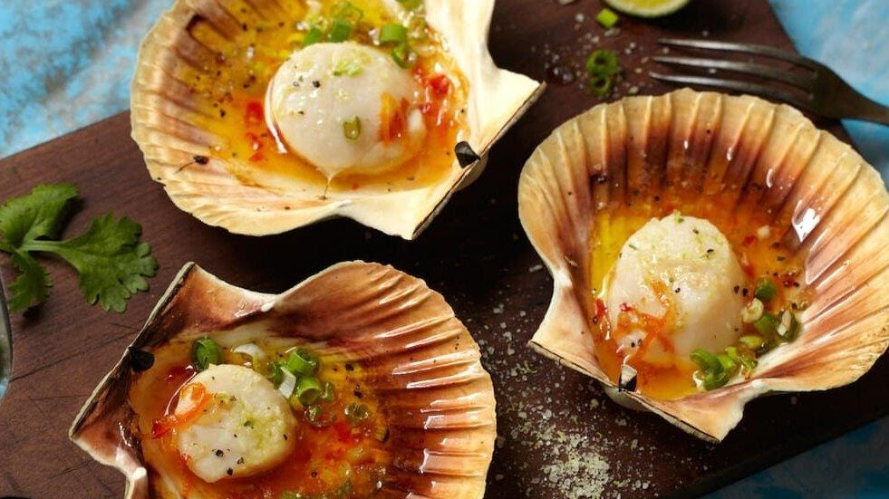

Chasing M2 ROV
01
Ta kontakt →
ROV-inspeksjon
Vi bruker Chasing M2 undervannsdronen til inspeksjon, søk og dokumentasjon under vann. HD-video fra hvert oppdrag.
Egnet for kai, skrog, fortøyinger, merder og annen undervannsinfrastruktur.
Chasing M2
4K-kamera, kraftig belysning, opptil 100 m rekkevidde.

Vestlandsfjordene
02
Ferske kamskjell
Håndplukket fra de klare fjordene rundt Bømlo. Levert ferskt, aldri fryst.
For privatpersoner og restauranter — ta kontakt for bestilling.
Bestill →
Under overflaten
03
Undervannsfoto
Foto og video under vann — til inspeksjonsrapporter, markedsføring eller eget bruk.
Se galleri →